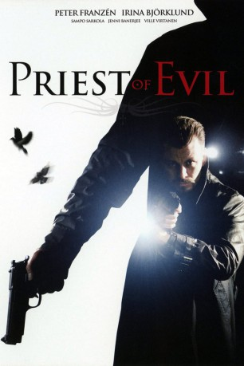
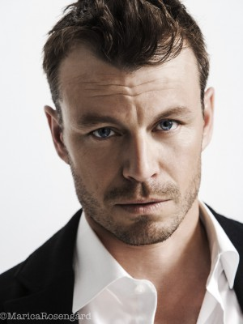
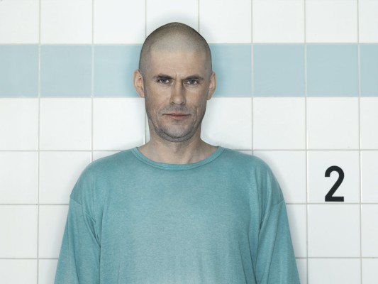

#8688 Priest of Evil
 
 IMDB-Wertung: 5.9 / 10
IMDB-Wertung: 5.9 / 10  Metascore: 0
Metascore: 0 
Die Polizei von Helsinki, allen voran der Ermittler Timo Harjunpaa ist mit einer Serie von Morden innerhalb verschiedener U-Bahn-Stationen völlig überfordert. Die Überwachungskameras zeichnen keine ungewöhnlichen Tätigkeiten auf und auch sonst will niemand etwas gesehen haben. Die Ermittlungen laufen schleppend und der Ermittler muss jedes Puzzlestück in mühevoller Kleinarbeit zusammensetzen. Dennoch gelingt es ihm langsam, dem geheimnisvollen Täter näher zu kommen. Doch je mehr sich die Spuren verdichten und je näher Timo sich des Rätsels Lösung wähnt, desto mehr Fragen werden aufgeworfen, bis er sich der Tatsache bewusst wird, dass er es hier mit dem schrecklichsten und persönlichsten Fall seiner gesamten Laufbahn zu tun haben muss.
Jahr: 2010
Dauer: 105 Minuten
FSK: 18
Land: Finnland Studio: Ascot Elite Home EntertainmentTonspuren:
Untertitel:
Auflösung: 1080p (1920x816) Größe: 5273 MB
Genre: Thriller, Mystery
Regisseur: Olli Saarela
Drehbuch: Matti Yrjänä Joensuu
Soundtrack: Tomi Malm, Jyrki Rahkonen
Darsteller:
-  Peter Franzén als Rikosylikonstaapeli Timo Harjunpää
- Irina Björklund als Elisa Harjunpää
- Sampo Sarkola als Johannes Heino
- Jenni Banerjee als Rikoskonstaapeli Onerva Nykänen
- Rosa Salomaa als Paulina Harjunpää
- Jorma Tommila als Matias Krankke
 Ville Virtanen als Rikoskomisario Mäki
Ville Virtanen als Rikoskomisario Mäki-  Tommi Korpela als Kengu
- Maria Järvenhelmi als Cessi
- Inka Kallén als Jaana Yasin
- Saga Sarkola als Emmi Harjunpää
- Robert Enckell als Oikeuslääkäri
- Rauno Juvonen als Vanginvartija
- Eero Milonoff als Petri Haag
- Niilo Syväoja als Matti
- Petri Manninen als Johanneksen naapuri
- Kalle Holmberg als Luennoitsija
- Ville Saksela als Jere Maastola
- Reino Nordin als Skini
- Jari Hietanen als Jari
- Jouko Puolanto als Johanneksen isä
- Minna Puolanto als Johanneksen äiti
- Antti Sajantila als Oikeuslääkäri
- Tiitus Rantala als Johannes lapsena
- Mohamed El Bouari als Fahid Yasin
- Roni Rikkonen als Kim Haag
- Aki Häkkinen als Petri Haag
- Meri Hulkkonen als Roosa Haag
- Etel Röhr als Emmin ystävä
- Kirill Wilen als Jeren kaveri
- Otto Kiiski als Jeren kaveri
- Elias Salonen als Jeren kaveri
- Kaisa Kauppi als Sairaanhoitaja
- Leena Vanhamäki als Sairaanhoitaja
- Martti Hirvonen als Pappi
- Airi Kulonen als Isoäiti
- Petri Pirkkalainen als Poliisin piirtäjä
- John Ahlgren als Rikospoliisi
- Juha Larsson als Rikospoliisi
- Kauko Rikama als Rikospoliisi
- Gyan Dookie als Rikospoliisi
- Mirja Oksanen als Rikospoliisi
- Fireal als Rock band
Datei: X:\FSK18-2010\Priest of Evil (2010, FSK18, 1920x816).mkv seit 25.04.2018
Festplatte: FSK18
 Es gibt insgesamt 35 Filme in der Gruppe 'FSK18-2010'
Es gibt insgesamt 35 Filme in der Gruppe 'FSK18-2010'